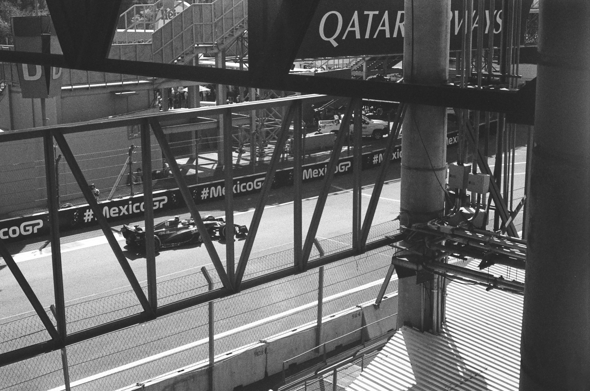
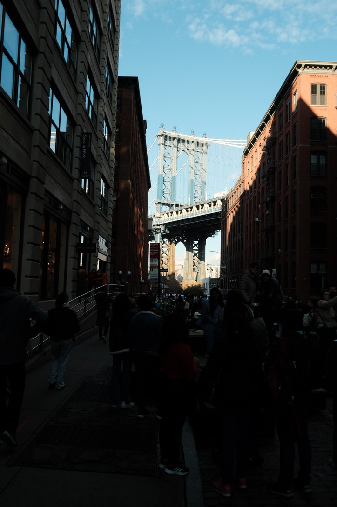

This was the first picture I took with my first film camera (Canon FTB QL) with the film roll
that came with it. I was anxious to see if the camera worked and I was surprised to see what I got. I love how real it feels.
With that first film roll, I also took this picture and I was astonished of the looks.
To this day I still don't which film roll it is.
One of the most dificult things of using a vintage Canon camaras, is manually focusing, and controling the exposure on the picture. I really liked
how it looked with not to much light.
I took this picture using Kodak Color Plus 200, I really liked how the shades play an important part of the whole picture and I don't know why the light looks so yellow
Also this was the last day of a trip my grilfriend and I made to LA, so I think this picture depicts the end of not only the day but also the trip.
I don't know where to start with this picture, it probably is my favorite picture of all time. The colors that the fujifilm 400 gave me here where 10 times better that the
sunset was in real time.


This is the first time I used a black and wihte roll, it worked awsome on portaraits and pictures with people around. One of the things I would like to explore is to take
pictures of people and not only landscapes.


I recently bought a Fujifilm xt-30 ii and this was the first picture I took with it, I was still learning how it works

This is the reason why I bought that Fujfilm, love how sharp the image looks and also the fact that i played with the ISO to achieve the look of it.

This was the last day of our trip to NYC and went to TimeSquare and I started to take pictures of everything I saw and this beauty came out.